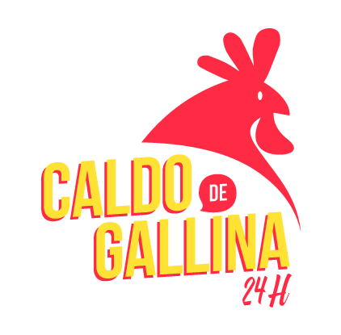

La temperatura en esta época del año sigue descendiendo y el frío exige medidas estrictas: ¡un riquísimo y caliente caldo de gallina! Todo peruano o peruana ha oído hablar de este famoso plato que siempre viene bien para calentar el cuerpo en épocas friolentas.
Es muy popular consumirlo de madrugada después de trasnochar, al estar muy agotado o antes de empezar el trabajo, ya que se dice que recarga las energías. Por ello, este plato tan querido entre jóvenes y adultos es muy fácil de conseguir las 24 horas del día.
Pero, ¿cómo se originó el caldo de gallina? Guiándonos por el escritor Manuel Asencio Segura, el caldo de gallina data desde inicios del siglo XIX. Este plato es mencionado en “Artículos, Poesías y Comedias” en su verso Costumbres. Ya para los años 50 este ganó popularidad y se vendía como un plato más de los menús criollos en mercados de La Victoria.
El caldo de gallina siempre ha tenido una receta bastante característica: caldo de gallina, literalmente, papa amarilla, fideos, kion o jengibre, huevos sancochados, cebolla china picadita y, por supuesto, presas de gallina. Todo servido muy caliente, de modo que el vapor del tazón continúe vivo hasta terminar de comer. Con el tiempo, sus fieles acompañantes han sido la canchita serrana y la riquísima crema de ají.
En Lima, el caldo de gallina se fue asociando al frío y las madrugadas tras haber terminado una jornada laboral o cuando acababa una noche de diversión. Este plato ofrecía toda la energía y calor excelentes para las necesidades de sus comensales. Los había en restaurantes y hasta en carpas coloridas instaladas en calles abiertas para jóvenes y adultos. Sobre todo cargadores y comerciantes que empezaban el trabajo se acercaban a los puestos desde las cinco de la mañana.
En la sierra peruana, el caldo de gallina tiene un significado más familiar y de alegría. Este plato está muy presente en las celebraciones o festividades, con sus diferentes adaptaciones, recetas tradicionales y fusiones propias de cada familia o comunidad.
¡Cena, almuerzo o de madrugada, el caldo de gallina no te fallará! Su exquisito sabor, su calor intenso y su energía revitalizadora se combinan perfecto para el momento preciso, como es el invierno.
Teléfono: (+51) 941465012